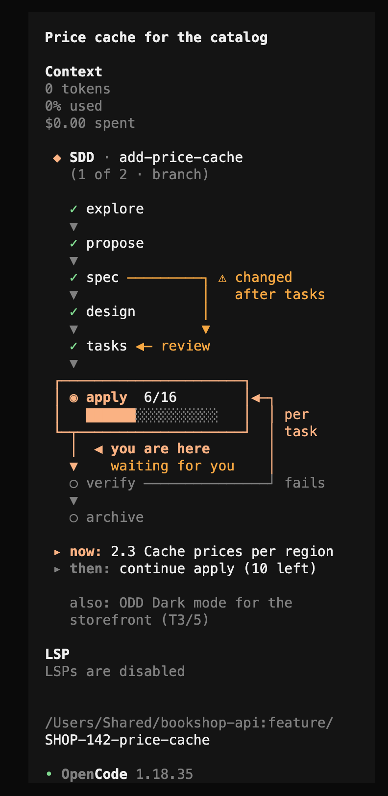
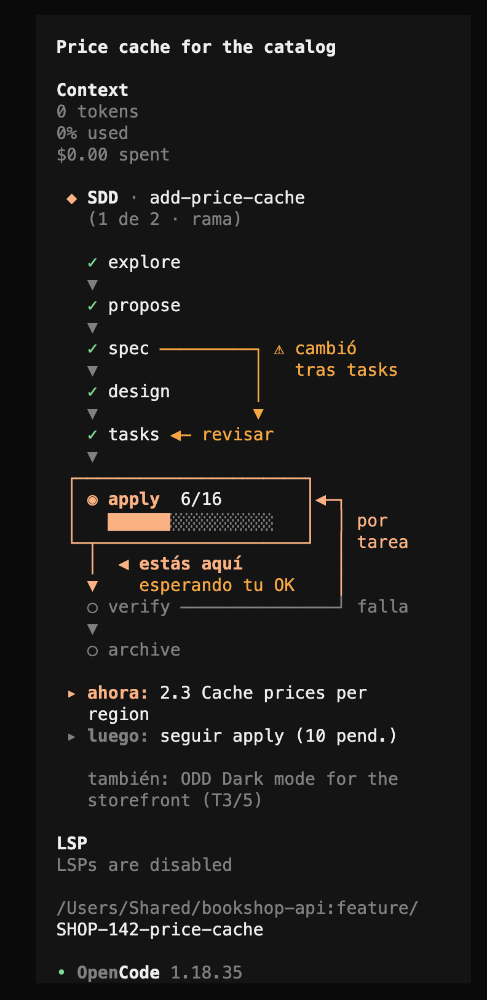
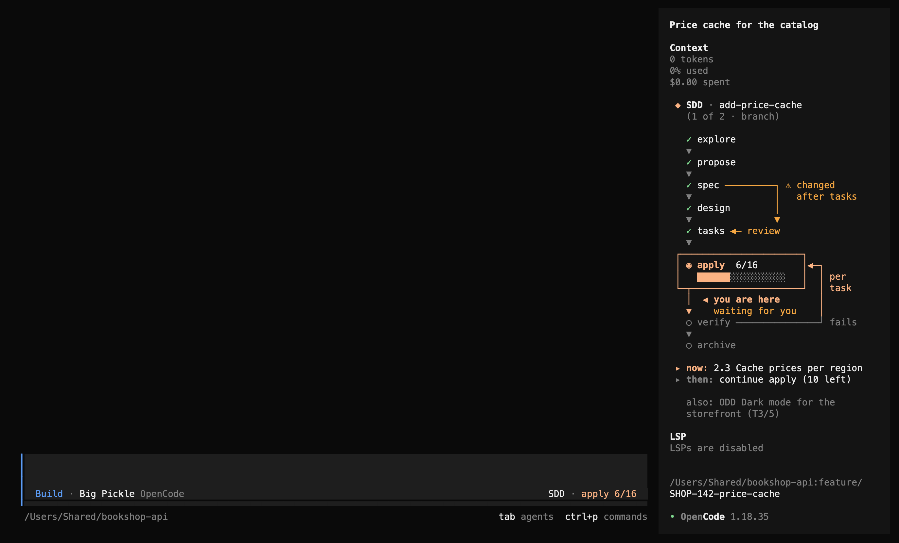
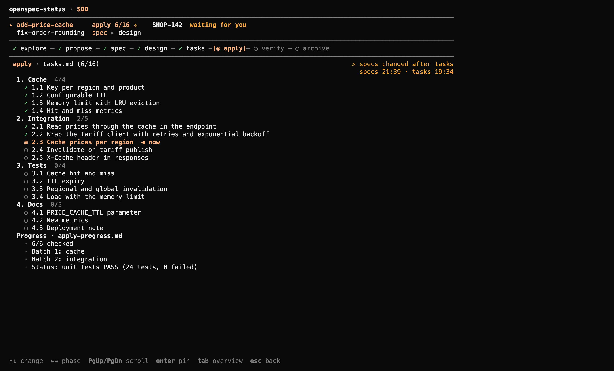
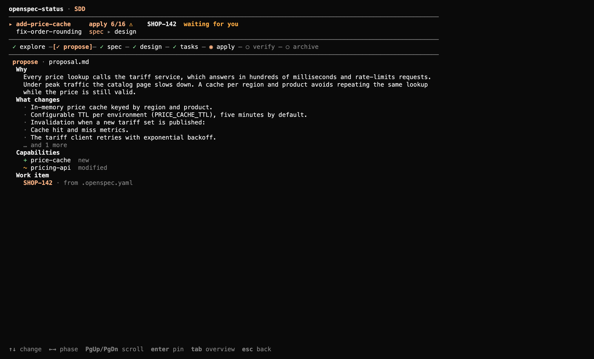
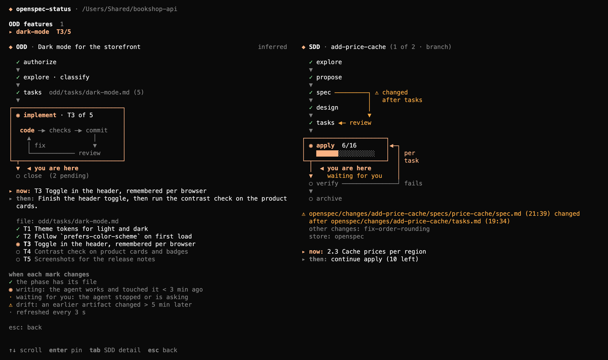

opencode-openspec-status
An OpenCode TUI plugin that draws, in the right sidebar, where your OpenSpec (SDD) change or ODD feature stands and what comes next. It only reads: it never changes the state of your project or of gentle-ai.
What it shows
Every screenshot comes from the real OpenCode 1.18.35 TUI on a small demo project, bookshop-api, with two OpenSpec changes and one ODD feature.

(1 of 2 · branch): there are two changes and the one shown matches your branch. The agent stopped, so it says waiting for you.
OPENSPEC_STATUS_LANG, LC_ALL, LANG…). The markdown parsers understand both languages too: Tasks / Tareas, Next step / Siguiente paso.
SDD · apply 6/16). The ODD feature that is not in focus stays in a muted also: … line.
/openspec-status: SDD detailThe change list (↑↓), the phase strip (←→) and the panel of the chosen phase: here the grouped tasks with the current one, the drift with its times and the apply-progress summary. The change's row says what the agent is doing and shows its work item.
workItem: SHOP-142 in .openspec.yaml). For Azure DevOps the URL is built from the git remote, offline.
inferred: it comes from markdown and git.How to use it
Install
git clone https://github.com/mjtc1985/opencode-openspec-status.git cd opencode-openspec-status && bun install
Then add the absolute path of the folder to the plugin array of ~/.config/opencode/tui.json:
{ "plugin": ["/absolute/path/to/opencode-openspec-status"] }
The sidebar only exists inside a session; /openspec-status also works from the home screen.
Keys in /openspec-status
| Key | SDD detail | Overview |
|---|---|---|
| ↑↓ | Previous / next change | ODD feature (when there are several) or scroll |
| ←→ | Previous / next phase | — |
| HomeEnd | First / last phase | — |
| PgUpPgDn | Scroll the panel | Scroll |
| Enter | Pin / release the change | Pin / release the feature |
| Tab | Switch between SDD detail and overview | |
| Esc | Back to where you were | |
What the sidebar picks
- What is pinned in this session (Enter in
/openspec-status), or what was started in it (markednew). - Otherwise your branch's: the change whose work item or name matches the branch, or the ODD document whose name is in the branch.
- Otherwise the newest.
One methodology is shown; the other stays in an also: … line. Pins belong to a session: a new session picks on its own again. Pinning only changes what you see; the agent still has to be told what to work on.
When each mark changes
| Mark | Meaning |
|---|---|
| ✓ | The phase has its file (proposal.md, specs/…, design.md, tasks.md…). |
| ◉ writing m:ss | The session is busy and that phase was touched less than 3 minutes ago. |
| waiting for you | The agent stopped after a phase or is asking you something. |
| ⚠ … changed after … | An earlier artifact changed more than 5 minutes after a later one (less counts as the same agent pass). It says what to do: review tasks, check what was already applied, or run verify again. |
| ✗ | Blocked: work exists without the previous phases, or gentle-ai reports blocking reasons. |
Everything is reread every 3 s (the review every 10 s). When a source fails, the last known value stays on screen marked as stale.
Without gentle-ai
gentle-ai is optional. When the gentle-ai executable is not found, the plugin infers the same sdd-status JSON from the OpenSpec files (which artifacts exist, task checkboxes, the first missing artifact as the next step), marks the SDD header (inferred) and hides the review section. On the demo project the inferred status matches gentle-ai's field for field.
How it is built
A TypeScript package (about 5 900 lines in src/, 600+ tests with bun test) that OpenCode loads as a TUI plugin through its ./tui export. The logic is pure and kept apart from drawing:
sdd-status, review status, review-state.json, odd/tasks/*.md, OpenSpec artifacts, .git/HEAD and .git/config. They produce a Snapshot.Snapshot → FlowView → lines of { text, color, bold } segments for the sidebar, the detail, the overview and the indicator. No IO.t(key, params) and locale detection.openspec-status route, the command and key layers, and maps colors to the theme. The only file tied to the OpenCode API.Where the data comes from
| What | Source |
|---|---|
| Phases, tasks, next step, blocks | gentle-ai sdd-status [change] --json --cwd <root> (schema gentle-ai.sdd-status@2), or the same JSON inferred from openspec/changes/ without gentle-ai. |
| Drift and phase in progress | Modification times of the files in artifactPaths. |
| Detail panels | Tolerant parsers for proposal, specs (requirements, scenarios, ADDED/MODIFIED/REMOVED/RENAMED), design, tasks, apply-progress and verify-report. |
| ODD | odd/tasks/*.md: the T1… checklist, marks such as (partial) and the «Next step» section. Marked «inferred». |
| Review | gentle-ai review status (v1, and the v2 contract per lineage) and the lenses from .git/gentle-ai/review-transactions/v2/<lineage>/review-state.json. |
| ODD cycle step | git --no-optional-locks status --porcelain (dirty tree). |
| Branch and work item | Reading .git/HEAD and .git/config, without running git; workItem: from .openspec.yaml. |
| Agent working / waiting | The OpenCode API: api.state.session.status, question and permission of the current session. |
Read-only and safe with hostile repositories
- Allowlist (
isAllowed) right before every process: onlysdd-status,review statusand thatgit status. Neverreview start,capture-*,--consent… even when a JSON carries the command ready to run; those fields are not even kept. review statusrunsgit initin folders without a repo: it is only called when<root>/.gitexists.- Processes without a shell, with a 5 s timeout that kills the process group, output capped at 2 MB, a PATH with absolute entries only and
core.fsmonitor=falsefor children. - Bounded reads: regular files only, with a byte cap (a link to
/dev/zeroor a FIFO hangs nothing) and contained in the root byrealpath. Linear regexes and a line-length cap in every parser. - Credentials in the git remote are stripped before any URL is built.
- The only write is the pin, in OpenCode's store (
api.kv, keyopenspec-status:pin:<root>:<session>), never in gentle-ai or the project.
Polling
Each source (SDD, ODD and git every 3 s; review every 10 s) has its own timer and never two reads at once. A read that does not finish in 30 s counts as failed and the source is marked stale. The v2 review call is memoized per lineage and revision. The /openspec-status detail only loads while the screen is open. Jumping to new work compares, per session and in memory, the names of changes and documents with the ones seen when the session opened.
Drawing
Each line is a list of segments; each segment, an opentui <text> inside a row (<span> has no typed color) with flexShrink=0. The sidebar is 42 columns wide but leaves about 36 usable, so it is drawn at 36. Widths are measured with displayWidth (emoji and CJK take 2 columns) and only fixed-width characters are used: thin box drawing ┌─┐ and ✓ ◉ ○ ✗ ⚠ ▸ ▼ ◀.
OpenCode 2
OpenCode 2 is opt-in and ships a new plugin API (@opencode/plugin, Plugin.define, slots such as sidebar.content); 1.x plugins do not load there. Since only tui.tsx touches the OpenCode API, OpenCode 2 support is planned as a second thin adapter in the same repository.
/openspec-status while the agent is working.